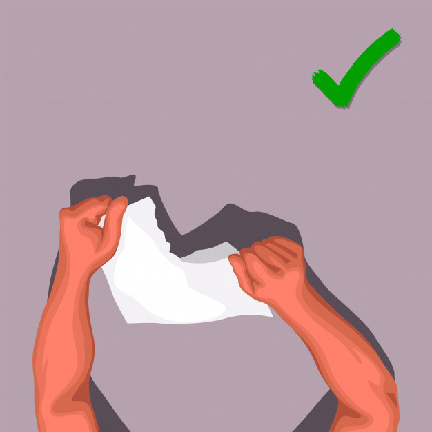
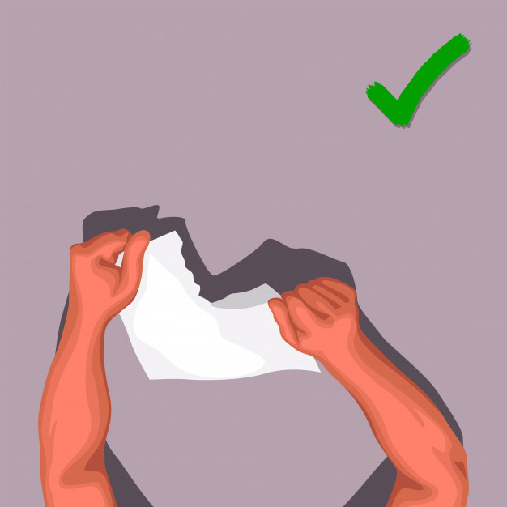

Viu como é fácil? Agora veja o que fazer para que um caminhão passe em sua casa para buscar os recicláveis.
1° passo – Faça seu cadastro ou efetue login para acessar a aba de agendamento do site.
2° passo – Preencha o formulário de agendamento e insira o endereço de retirada (este será o endereço onde o caminhão passará, não precisa necessariamente ser o seu).
3° passo – Escolha a data de acordo com a disponibilidade da empresa parceira.
4°passo – No dia da retirada, coloque o seu lixo em sua porta e aguarde a retirada.
Dicas: Não misture seu lixo comum com o reciclável. A empresa não saberá qual lixo recolherá, isso estará na sua responsabilidade.
Não escolha um dia de retirada no mesmo dia que o caminhão de lixo comum passa na sua rua, isso evitará futuras confusões.

 
